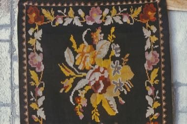

Home / Living Traditions / Northern and Eastern Europe
Encyclopedia ID 1339
Moldovan Woven Carpet Pattern Studio
Also known as Covor moldovenesc

.jpg){kind=link}
Choose a bold floral medallion, border and ground colour, then fill the rug pattern cell by cell on a loom grid, matching symmetry rules of traditional Moldovan wall and floor carpets.
Heritage note
Part of the living heritage of Moldova. Some forms of this practice carry deep meaning for the communities who keep it; here we describe the play and the craft only, with respect for its roots.
Origins
A living tradition passed from person to person; it is not tied to a single dated origin. It belongs to the cultural world of Northern and Eastern Europe.
Sources
Related entries

Cross-Stitch Pattern Weaving
Ukraine · Crafts and makingPlay preview · in the Textile Crafts of the World app
Haapsalu lace shawl knitting
Estonia · Crafts and making
Belarusian straw weaving
Belarus · Crafts and making
Hardanger embroidery
Norway · Crafts and making
Lielvārde Sash Pattern Weaving
Latvia · Crafts and making
Pirot Kilim Weaver
Serbia · Crafts and making
More from Moldova

Trânta
Moldova +1 · Wrestling and martial sports